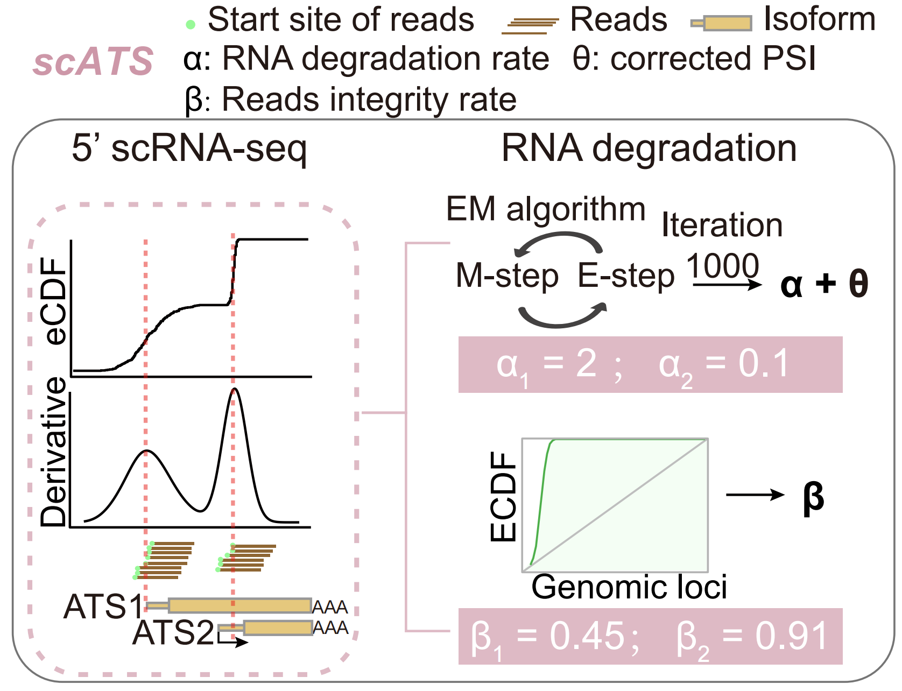

Welcome to scATS’s documentation!
scATS is a tool designed to de novo quantify alternative transcription start site (ATS) from paired-end 5’-end single-cell RNA sequencing (scRNA-seq) data. It achieves this by modeling the decreasing trend of short-read counts in exons from the 3’ to the 5’ ends of transcripts, which is attributable to RNA degradation.
scATS introduces two novel metrics (α and β) to precisely quantify RNA degradation, and provides both raw (ψ) and corrected (θ) metrics to correct ATS expression profiles from resulting distortions.
{kind=link}
Users are required to specify the genes and cells to be included in the analysis, as well as the minimum number for each gene. With these parameters, scATS can accurately calculate the expected abundance of ATS isoforms and conduct differential analysis for specific groups.
To use scATS, you can follow the instructions below:
Contents:
Citing scATS
If you use scATS in your research, please cite ******************************
Contacts
scATS is developed and maintained by Zijie Xu and Chao Tang from Sichuan University. If you want to contribute or have any questions, please leave an issue in our repository.
Thank you !